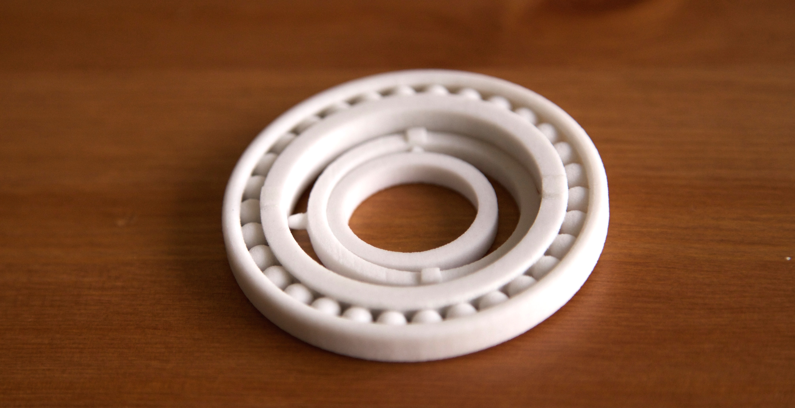
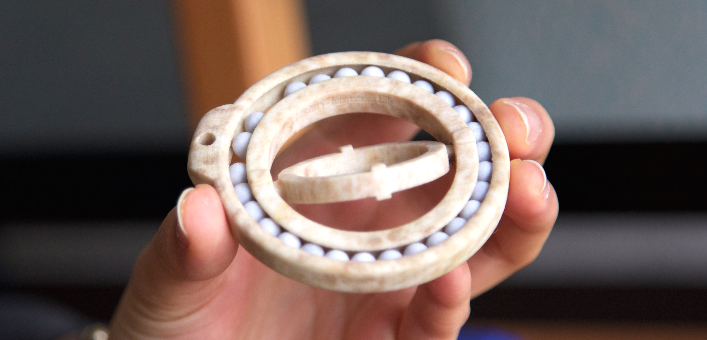

Gyroscope Ball Bearing
A personal project to create a toy while exploring the capabilities of a binder jet 3D printer.
Background
The idea to create a gyroscope-ball bearing hybrid was inspired by doing research on ideas I could try on a binder jet 3D printer that I had access to for a summer. I wanted to create something that took advantage of the 3D printer's powder support material, which enabled multiple bodies to be printed at once in ways a fused deposition printer would not be able to do.
binder jet 3D printer used for this project
video of binder jet 3D printer printing one layer
Iteration 1
The original intention was to have two degrees of rotation (2 gyroscopes) inside the ball bearing ring. However, the print of the first iteration lead me to realize that the design was too thin and complex. It was more difficult to hold and play with, and one of the pins broke during post-processing. Additionally, the ball bearing fused together during the printing process due to insufficient clearance, so it was not functional.
Iteration 2
Learning from the mistakes I made from iteration 1, I made the parts thicker and added more clearance for the ball bearing so that the bodies would not fuse accidentally during printing. I also experimented with adding a colored texture, removed one of the gyroscopes, and added an engraving inside the gyroscope. I am very pleased with this second iteration -- you can see it in action in the photo and video below.
